Course
Introduction and basics
You can find here pratical examples found in Introductory Econometrics: A Modern Approach, 6e by Jeffrey M. Wooldridge and Applied Econometrics with R of Kleiber C, Zeileis A (2008).
The wooldridge and AER packages allow you to load all the databases you need to illustrate those models.
install.packages(c("wooldridge","AER"))library(wooldridge)
library(AER)Linear Regression
Demand for economic journals : a simple Linear Regression
Data set from Stock & Watson (2007), originally collected by T. Bergstrom, on subscriptions to 180 economics journals at US libraries, for the year 2000. Bergstrom (2001) argues that commercial publishers are charging excessive prices for academic journals and also suggests ways that economists can deal with this problem. See http://www.econ.ucsb.edu/~tedb/Journals/jpricing.html
Description
data("Journals", package = "AER")
journals <- Journals[, c("subs", "price")]
journals$citeprice <- Journals$price/Journals$citations
summary(journals)## subs price citeprice
## Min. : 2.0 Min. : 20.0 Min. : 0.005223
## 1st Qu.: 52.0 1st Qu.: 134.5 1st Qu.: 0.464495
## Median : 122.5 Median : 282.0 Median : 1.320513
## Mean : 196.9 Mean : 417.7 Mean : 2.548455
## 3rd Qu.: 268.2 3rd Qu.: 540.8 3rd Qu.: 3.440171
## Max. :1098.0 Max. :2120.0 Max. :24.459459Estimation
The author wants to estimate the effect of the price per citation on the number of library subscriptions.
plot(log(subs) ~ log(citeprice), data = journals)
jour_lm <- lm(log(subs) ~ log(citeprice), data = journals)
abline(jour_lm)
Once the model is fitted, we can inspect the value of \(log(citeprice)\).
summary(jour_lm)##
## Call:
## lm(formula = log(subs) ~ log(citeprice), data = journals)
##
## Residuals:
## Min 1Q Median 3Q Max
## -2.72478 -0.53609 0.03721 0.46619 1.84808
##
## Coefficients:
## Estimate Std. Error t value Pr(>|t|)
## (Intercept) 4.76621 0.05591 85.25 <2e-16 ***
## log(citeprice) -0.53305 0.03561 -14.97 <2e-16 ***
## ---
## Signif. codes: 0 '***' 0.001 '**' 0.01 '*' 0.05 '.' 0.1 ' ' 1
##
## Residual standard error: 0.7497 on 178 degrees of freedom
## Multiple R-squared: 0.5573, Adjusted R-squared: 0.5548
## F-statistic: 224 on 1 and 178 DF, p-value: < 2.2e-16Prediction
And finally prediction
lciteprice <- seq(from = -6, to = 4, by = 0.25)
jour_pred <- predict(jour_lm, interval = "prediction",
newdata = data.frame(citeprice = exp(lciteprice)))
plot(log(subs) ~ log(citeprice), data = journals)
lines(jour_pred[, 1] ~ lciteprice, col = 1)
lines(jour_pred[, 2] ~ lciteprice, col = 1, lty = 2)
lines(jour_pred[, 3] ~ lciteprice, col = 1, lty = 2)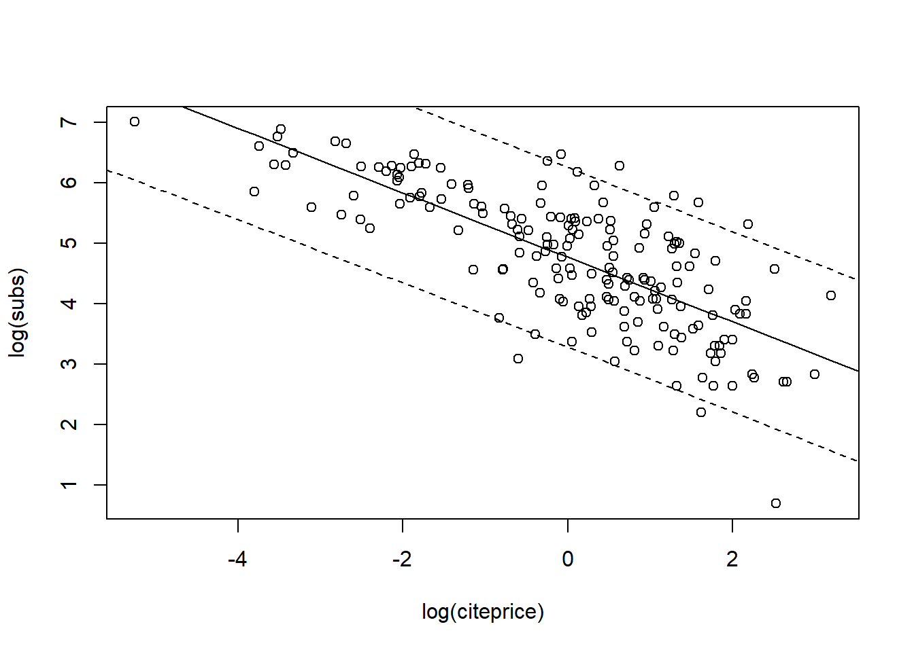
Wage equation : a Multiple Linear Regression
Bierens and Ginther (Empirical Economics 2001) analyze determinants of wages. The US Census Bureau collected 28155 observations. We have a cross-section data on males aged 18 to 70 with positive annual income greater than US$ 50 in 1992 who are not self-employed or working without pay. Finally wages are deflated by the deflator of personal consumption expenditures for 1992.
Description
data("CPS1988", package = "AER")
summary(CPS1988)## wage education experience ethnicity smsa
## Min. : 50.05 Min. : 0.00 Min. :-4.0 cauc:25923 no : 7223
## 1st Qu.: 308.64 1st Qu.:12.00 1st Qu.: 8.0 afam: 2232 yes:20932
## Median : 522.32 Median :12.00 Median :16.0
## Mean : 603.73 Mean :13.07 Mean :18.2
## 3rd Qu.: 783.48 3rd Qu.:15.00 3rd Qu.:27.0
## Max. :18777.20 Max. :18.00 Max. :63.0
## region parttime
## northeast:6441 no :25631
## midwest :6863 yes: 2524
## south :8760
## west :6091
##
## Estimation
cps_lm <- lm(log(wage) ~ experience + I(experience^2) + education + ethnicity, data = CPS1988)
summary(cps_lm)##
## Call:
## lm(formula = log(wage) ~ experience + I(experience^2) + education +
## ethnicity, data = CPS1988)
##
## Residuals:
## Min 1Q Median 3Q Max
## -2.9428 -0.3162 0.0580 0.3756 4.3830
##
## Coefficients:
## Estimate Std. Error t value Pr(>|t|)
## (Intercept) 4.321e+00 1.917e-02 225.38 <2e-16 ***
## experience 7.747e-02 8.800e-04 88.03 <2e-16 ***
## I(experience^2) -1.316e-03 1.899e-05 -69.31 <2e-16 ***
## education 8.567e-02 1.272e-03 67.34 <2e-16 ***
## ethnicityafam -2.434e-01 1.292e-02 -18.84 <2e-16 ***
## ---
## Signif. codes: 0 '***' 0.001 '**' 0.01 '*' 0.05 '.' 0.1 ' ' 1
##
## Residual standard error: 0.5839 on 28150 degrees of freedom
## Multiple R-squared: 0.3347, Adjusted R-squared: 0.3346
## F-statistic: 3541 on 4 and 28150 DF, p-value: < 2.2e-16Comparaison of two models : significativity of one variable with the Wald Test
Is there a difference in the average log-wage (controlling for experience and education) between Caucasian and African-American men? We want to test the relevance of the variable ethnicity is the regression.
The Wald test works by testing the null hypothesis that a set of parameters is equal to some value. In the model being tested here, the null hypothesis is that the two coefficients of interest are simultaneously equal to zero. If the test fails to reject the null hypothesis, this suggests that removing the variables from the model will not substantially harm the fit of that model, since a predictor with a coefficient that is very small relative to its standard error is generally not doing much to help predict the dependent variable.
waldtest(cps_lm, . ~ . - ethnicity)## Wald test
##
## Model 1: log(wage) ~ experience + I(experience^2) + education + ethnicity
## Model 2: log(wage) ~ experience + I(experience^2) + education
## Res.Df Df F Pr(>F)
## 1 28150
## 2 28151 -1 354.91 < 2.2e-16 ***
## ---
## Signif. codes: 0 '***' 0.001 '**' 0.01 '*' 0.05 '.' 0.1 ' ' 1The p-value is less than the generally used criterion of 0.05 , so we are able to reject the null hypothesis, indicating that the coefficients are not equal. Because including statistically significant predictors should lead to better prediction (i.e., better model fit) we can conclude that including ethnicity results in a statistically significant improvement in the fit of the model.
Evolution of the consumption and the Income : Linear Regression with Time series Data
So as to illustrate Time series, we use data from Green (2003) that gives different specifications of consumption function. Data come from the Quarterly US macroeconomic data from 1950(1) – 2000(4), provided by USMacroG, a “ts” time series and contains disposable income dpi and consumption (in billion USD).
Description
data("USMacroG", package = "AER")
plot(USMacroG[, c("dpi", "consumption")], lty = c(3, 1),
lwd = 2, plot.type = "single", ylab = "")
legend("topleft", legend = c("income", "consumption"),
lwd = 2, lty = c(3, 1), bty = "n")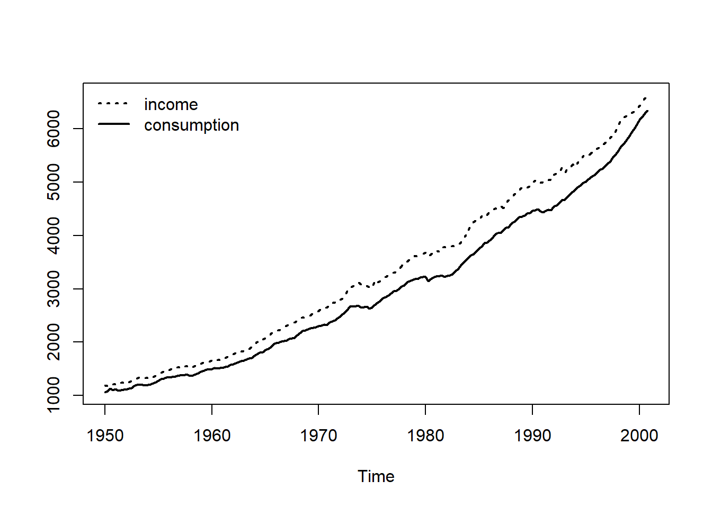
Regression
In his paper, Greene (2003) considers two models, in one consumption responds to changes in income only over two periods, in the second past variation of the income persists.
library("dynlm")
cons_lm1 <- dynlm(consumption ~ dpi + L(dpi), data = USMacroG)
cons_lm2 <- dynlm(consumption ~ dpi + L(consumption), data = USMacroG)
summary(cons_lm1)##
## Time series regression with "ts" data:
## Start = 1950(2), End = 2000(4)
##
## Call:
## dynlm(formula = consumption ~ dpi + L(dpi), data = USMacroG)
##
## Residuals:
## Min 1Q Median 3Q Max
## -190.02 -56.68 1.58 49.91 323.94
##
## Coefficients:
## Estimate Std. Error t value Pr(>|t|)
## (Intercept) -81.07959 14.50814 -5.589 7.43e-08 ***
## dpi 0.89117 0.20625 4.321 2.45e-05 ***
## L(dpi) 0.03091 0.20754 0.149 0.882
## ---
## Signif. codes: 0 '***' 0.001 '**' 0.01 '*' 0.05 '.' 0.1 ' ' 1
##
## Residual standard error: 87.58 on 200 degrees of freedom
## Multiple R-squared: 0.9964, Adjusted R-squared: 0.9964
## F-statistic: 2.785e+04 on 2 and 200 DF, p-value: < 2.2e-16summary(cons_lm2)##
## Time series regression with "ts" data:
## Start = 1950(2), End = 2000(4)
##
## Call:
## dynlm(formula = consumption ~ dpi + L(consumption), data = USMacroG)
##
## Residuals:
## Min 1Q Median 3Q Max
## -101.303 -9.674 1.141 12.691 45.322
##
## Coefficients:
## Estimate Std. Error t value Pr(>|t|)
## (Intercept) 0.535216 3.845170 0.139 0.889
## dpi -0.004064 0.016626 -0.244 0.807
## L(consumption) 1.013111 0.018161 55.785 <2e-16 ***
## ---
## Signif. codes: 0 '***' 0.001 '**' 0.01 '*' 0.05 '.' 0.1 ' ' 1
##
## Residual standard error: 21.52 on 200 degrees of freedom
## Multiple R-squared: 0.9998, Adjusted R-squared: 0.9998
## F-statistic: 4.627e+05 on 2 and 200 DF, p-value: < 2.2e-16Comparaison of models in term if residual sum of squares
plot(merge(as.zoo(USMacroG[,"consumption"]), fitted(cons_lm1),
fitted(cons_lm2), 0, residuals(cons_lm1),
residuals(cons_lm2)), screens = rep(1:2, c(3, 3)),
col = rep(c(1, 2, 4), 2), xlab = "Time",
ylab = c("Fitted values", "Residuals"), main = "")
legend(0.05, 0.95, c("observed", "cons_lm1", "cons_lm2"),
col = c(1, 2, 4), lty = 1, bty = "n")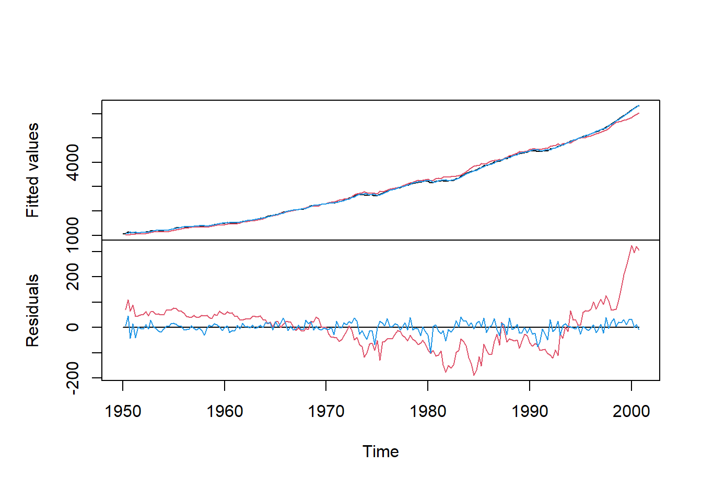
Does investment is a function of one enterprise value : Linear Regression with Panel Data
Data from Grunfeld (1958) covers 11 large US firms over 20 annual observations (1935-1954). Real gross investment is explained by the real value of the form and the real value of the capital stock.
Description
Select subset of three firms for illustration and declare individuals (“firm”) and time identifier (“year”).
data("Grunfeld", package = "AER")
library("plm")
gr <- subset(Grunfeld, firm %in% c("General Electric","General Motors", "IBM"))
pgr <- plm.data(gr, index = c("firm", "year"))## Warning: use of 'plm.data' is discouraged, better use 'pdata.frame' insteadFor later use, we also fit plain OLS on pooled data
gr_pool <- plm(invest ~ value + capital, data = pgr, model = "pooling")Regression : Fixed effects models (within)
We have in this model an individual specific effects.
gr_fe <- plm(invest ~ value + capital, data = pgr, model = "within")
summary(gr_fe)## Oneway (individual) effect Within Model
##
## Call:
## plm(formula = invest ~ value + capital, data = pgr, model = "within")
##
## Balanced Panel: n = 3, T = 20, N = 60
##
## Residuals:
## Min. 1st Qu. Median 3rd Qu. Max.
## -167.3305 -26.1407 2.0878 26.8442 201.6813
##
## Coefficients:
## Estimate Std. Error t-value Pr(>|t|)
## value 0.104914 0.016331 6.4242 3.296e-08 ***
## capital 0.345298 0.024392 14.1564 < 2.2e-16 ***
## ---
## Signif. codes: 0 '***' 0.001 '**' 0.01 '*' 0.05 '.' 0.1 ' ' 1
##
## Total Sum of Squares: 1888900
## Residual Sum of Squares: 243980
## R-Squared: 0.87084
## Adj. R-Squared: 0.86144
## F-statistic: 185.407 on 2 and 55 DF, p-value: < 2.22e-16Are the fixed effects really needed ?
We compare fixed effects and pooled OLS fits via \(pFtest()\).
pFtest(gr_fe,gr_pool)##
## F test for individual effects
##
## data: invest ~ value + capital
## F = 56.825, df1 = 2, df2 = 55, p-value = 4.148e-14
## alternative hypothesis: significant effectsIf the p-value is <0.05, then the fixed effects model is a better choice. Here it indicates substantial inter-firm variation.
Regression : Random effects
gr_re <- plm(invest ~ value + capital, data = pgr,
model = "random", random.method = "walhus")
summary(gr_re)## Oneway (individual) effect Random Effect Model
## (Wallace-Hussain's transformation)
##
## Call:
## plm(formula = invest ~ value + capital, data = pgr, model = "random",
## random.method = "walhus")
##
## Balanced Panel: n = 3, T = 20, N = 60
##
## Effects:
## var std.dev share
## idiosyncratic 4389.31 66.25 0.352
## individual 8079.74 89.89 0.648
## theta: 0.8374
##
## Residuals:
## Min. 1st Qu. Median 3rd Qu. Max.
## -187.3987 -32.9206 6.9595 31.4322 210.2006
##
## Coefficients:
## Estimate Std. Error z-value Pr(>|z|)
## (Intercept) -109.976572 61.701384 -1.7824 0.07468 .
## value 0.104280 0.014996 6.9539 3.553e-12 ***
## capital 0.344784 0.024520 14.0613 < 2.2e-16 ***
## ---
## Signif. codes: 0 '***' 0.001 '**' 0.01 '*' 0.05 '.' 0.1 ' ' 1
##
## Total Sum of Squares: 1988300
## Residual Sum of Squares: 257520
## R-Squared: 0.87048
## Adj. R-Squared: 0.86594
## Chisq: 383.089 on 2 DF, p-value: < 2.22e-16Are random effect really needed
plmtest(gr_pool)##
## Lagrange Multiplier Test - (Honda) for balanced panels
##
## data: invest ~ value + capital
## normal = 15.47, p-value < 2.2e-16
## alternative hypothesis: significant effectsIf the p-value is <0.05, then the random model is a better choice. Here it indicates heterogeneity.
Systems of linear equations
Seemingly unrelated regressions (SUR) model for Grunfeld data. Unlike panel data models considered above, SUR model allows for individual-specific slopes (in addition to individual-specific intercepts). Contemporaneous correlation across equations. Thus joint estimation of all parameters more efficient than OLS on each equation.
We use only two firms to save space
gr2 <- subset(Grunfeld, firm %in% c("Chrysler", "IBM"))
pgr2 <- plm.data(gr2, c("firm", "year"))## Warning: use of 'plm.data' is discouraged, better use 'pdata.frame' insteadEstimation
library("systemfit")## Loading required package: Matrix##
## Please cite the 'systemfit' package as:
## Arne Henningsen and Jeff D. Hamann (2007). systemfit: A Package for Estimating Systems of Simultaneous Equations in R. Journal of Statistical Software 23(4), 1-40. http://www.jstatsoft.org/v23/i04/.
##
## If you have questions, suggestions, or comments regarding the 'systemfit' package, please use a forum or 'tracker' at systemfit's R-Forge site:
## https://r-forge.r-project.org/projects/systemfit/gr_sur <- systemfit(invest ~ value + capital, method = "SUR", data = pgr2)
summary(gr_sur, residCov = FALSE, equations = FALSE)##
## systemfit results
## method: SUR
##
## N DF SSR detRCov OLS-R2 McElroy-R2
## system 40 34 4113.64 11022 0.928939 0.927094
##
## N DF SSR MSE RMSE R2 Adj R2
## Chrysler 20 17 3001.64 176.5672 13.28786 0.913457 0.903276
## IBM 20 17 1112.00 65.4117 8.08775 0.952079 0.946441
##
##
## Coefficients:
## Estimate Std. Error t value Pr(>|t|)
## Chrysler_(Intercept) -5.7031286 13.2773843 -0.42954 0.67292712
## Chrysler_value 0.0779871 0.0195817 3.98266 0.00096271 ***
## Chrysler_capital 0.3114785 0.0286957 10.85455 4.5944e-09 ***
## IBM_(Intercept) -8.0908189 4.5216484 -1.78935 0.09138881 .
## IBM_value 0.1272417 0.0306021 4.15794 0.00065881 ***
## IBM_capital 0.0966341 0.0983302 0.98275 0.33951047
## ---
## Signif. codes: 0 '***' 0.001 '**' 0.01 '*' 0.05 '.' 0.1 ' ' 1Output indicates again that there is substantial variation among firms.
Diagnostics and Alternative Methods of Regression
We give code here to validate the linear regression models. We will cover ; i) regression diagnostics: Comparison of statistics for full data set and for data with single observations deleted ; ii) diagnostic tests: Test for heteroskedasticity, autocorrelation, and misspecification of the functional form, etc ; iii) Robust covariances: Covariance estimators that are consistent for a wide class of disturbance structures.
We will also give hints for alternative methods of regression : regression techniques that are robust to outliers and unusual observations and model quantiles of the conditional distribution of a variable.
Regression diagnostics
Find points that are not fitted as well as they should be or have undue influence on the fitting of the model. We use the paper of Besley, Kuh adn Welsch (1980) based on deletion of observations. PublicSchools data provide per capita Expenditure on public schools and per capita Income by state for the 50 states of the USA plus Washington, DC., for 1979.
data("PublicSchools", package = "sandwich")
summary(PublicSchools)## Expenditure Income
## Min. :259.0 Min. : 5736
## 1st Qu.:315.2 1st Qu.: 6670
## Median :354.0 Median : 7597
## Mean :373.3 Mean : 7608
## 3rd Qu.:426.2 3rd Qu.: 8286
## Max. :821.0 Max. :10851
## NA's :1Scatterplot with fitted linear model and three highlighted observations.We omit incomplete observations (Wisconsin) and scale income to be in 10,000 USD.
ps <- na.omit(PublicSchools)
ps$Income <- ps$Income / 10000
plot(Expenditure ~ Income, data = ps, ylim = c(230, 830))
ps_lm <- lm(Expenditure ~ Income, data = ps)
abline(ps_lm)
id <- c(2, 24, 48)
text(ps[id, 2:1], rownames(ps)[id], pos = 1, xpd = TRUE)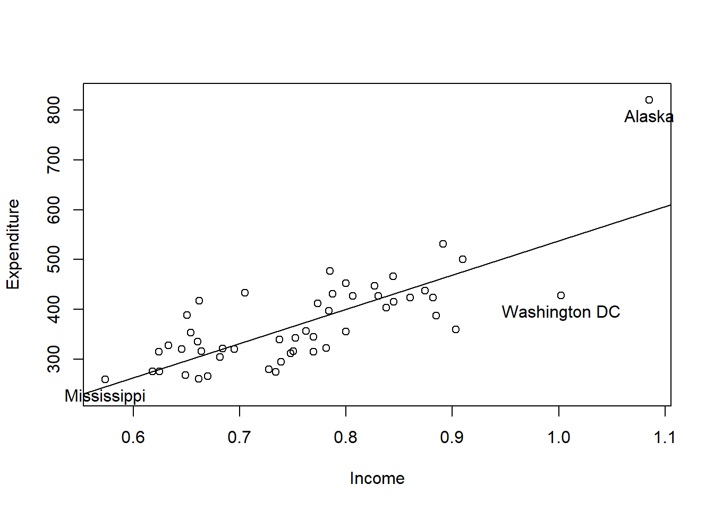
If you are familiar with outlier caracterization, use the following command
plot(ps_lm,which=1:6)Alaska stands out in all plots, it has ; which = 1) a large residual ; which = 2) Upper tail of empirical distribution of residuals ; which = 3 ) Casts doubt on the assumption of homogeneous variances ; which = 4 and 6) Corresponds to an extraordinarily large Cook’s distance ; which = 5 and 6) Has the highest leverage. Deleting this observation might be an option.
Diagnostic Tests
We test here for heteroskedasticity in cross-section regressions or disturbance autocorrelation in time series regressions.
We can reconsider Journals data as an example for cross-section regressions.
data("Journals", package = "AER")
journals <- Journals[, c("subs", "price")]
journals$citeprice <- Journals$price/Journals$citations
journals$age <- 2000 - Journals$foundingyear
jour_lm <- lm(log(subs) ~ log(citeprice), data = journals)Testing for heteroskedasticity
With the Breusch-Pagan test
bptest(jour_lm)##
## studentized Breusch-Pagan test
##
## data: jour_lm
## BP = 9.803, df = 1, p-value = 0.001742or with the White test
bptest(jour_lm, ~ log(citeprice) + I(log(citeprice)^2),
data = journals)##
## studentized Breusch-Pagan test
##
## data: jour_lm
## BP = 10.912, df = 2, p-value = 0.004271f the p-value is below 5%, we reject the null hypothesis of homoskedasticity and conclude that there is heteroskedasticity.
Testing the functional form
The assumption is make that \((ε|X) = 0\) and is crucial for consistency of the least-squares estimator. Misspecification of the functional form, for example by omitting relevant variables, is a source of violation. The following command test if the specification is ok :
resettest(jour_lm)##
## RESET test
##
## data: jour_lm
## RESET = 1.4409, df1 = 2, df2 = 176, p-value = 0.2395if the p-value is lower than 5%, we reject the nul hypothesis that the functional form of the model is well specified. Here this is not the case.
Testing for autocorrelation
Time series regressions are often affected by autocorrelation (or serial correlation), just as disturbances in cross-section models are typically heteroskedastic.
Let us consider the model for US consumption function.
library("dynlm")
data("USMacroG", package = "AER")
consump1 <- dynlm(consumption ~ dpi + L(dpi), data = USMacroG)A classical test for autocorrelation is the Durbin-Watson. Dwtest() implements an exact procedure for computing the p value (for Gaussian data) and also provides a normal approximation for sufficiently large samples (both depending on the regressor matrix X).
dwtest(consump1)##
## Durbin-Watson test
##
## data: consump1
## DW = 0.086636, p-value < 2.2e-16
## alternative hypothesis: true autocorrelation is greater than 0the null hypothesis of no autocorrealation is here for example rejected.
Robust Standard Errors and Tests
As seen previously, in the presence of autocorrelation and/or heteroskedasticity, the covariance structure need to be adjusted. More often than not, form of the autocorrelation or heteroskedasticity is unknown. In R, vcovHC() computes all versions of covariance estimators from a fitted linear model.
vcovHC(jour_lm)## (Intercept) log(citeprice)
## (Intercept) 0.003085261 0.000693040
## log(citeprice) 0.000693040 0.001188432Microeconometrics
Many microeconometric models belong to the domain of generalized linear models (GLMs) : probit model, Poisson regression. R has a single fitting function glm() closely resembling lm(). Because of the built-in distributional assumption, hence use method of maximym likelihood (ML). ## Binary Dependent Variables : Probit and Logit model A standard normal distribution yields to a probit model whereas a logistic distribution yields to a logit model.
We take the example of the Female labor force participation for 872 women from Switzerland (Gerfin, JAE 1996).
Regression
The dependent variable is participation and regressors are income, nonlabor income (in logs) education, years of formal education, age, age in decades, numbers of younger / older children foreign and factor indicating citizenship.
data("SwissLabor", package = "AER")
swiss_probit <- glm(participation ~ . + I(age^2),
data = SwissLabor, family = binomial(link = "probit"))
summary(swiss_probit)##
## Call:
## glm(formula = participation ~ . + I(age^2), family = binomial(link = "probit"),
## data = SwissLabor)
##
## Deviance Residuals:
## Min 1Q Median 3Q Max
## -1.9191 -0.9695 -0.4792 1.0209 2.4803
##
## Coefficients:
## Estimate Std. Error z value Pr(>|z|)
## (Intercept) 3.74909 1.40695 2.665 0.00771 **
## income -0.66694 0.13196 -5.054 4.33e-07 ***
## age 2.07530 0.40544 5.119 3.08e-07 ***
## education 0.01920 0.01793 1.071 0.28428
## youngkids -0.71449 0.10039 -7.117 1.10e-12 ***
## oldkids -0.14698 0.05089 -2.888 0.00387 **
## foreignyes 0.71437 0.12133 5.888 3.92e-09 ***
## I(age^2) -0.29434 0.04995 -5.893 3.79e-09 ***
## ---
## Signif. codes: 0 '***' 0.001 '**' 0.01 '*' 0.05 '.' 0.1 ' ' 1
##
## (Dispersion parameter for binomial family taken to be 1)
##
## Null deviance: 1203.2 on 871 degrees of freedom
## Residual deviance: 1017.2 on 864 degrees of freedom
## AIC: 1033.2
##
## Number of Fisher Scoring iterations: 4Visualization
Produces spine plot for resulting proportions of participation within age groups
plot(participation ~ age, data = SwissLabor, ylevels = 2:1)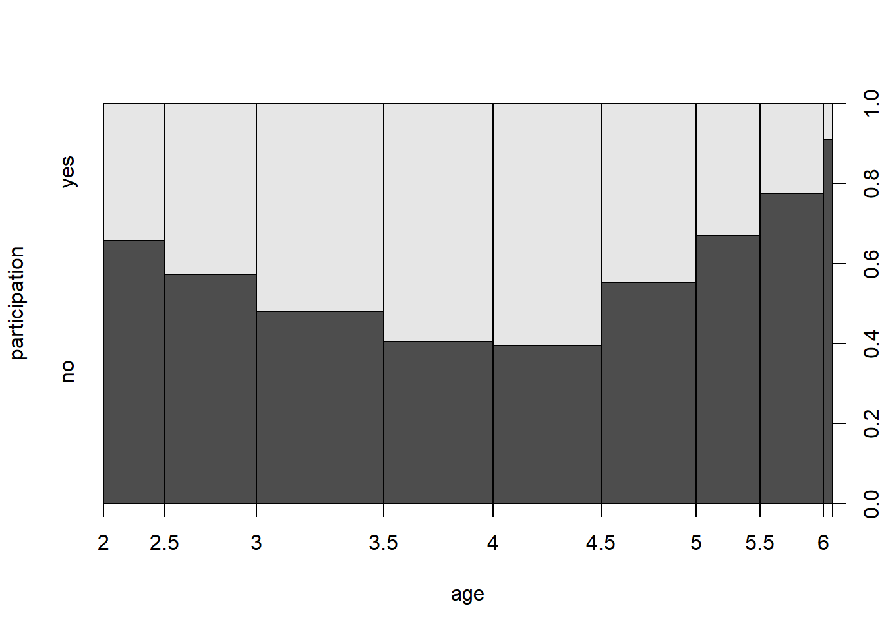
Effect
In linear models, the interpretation of model parameters is linear. The effects in probit model vary with regressors.
You need additional step to display the average of sample marginal effect :
fav <- mean(dnorm(predict(swiss_probit, type = "link")))
fav * coef(swiss_probit)## (Intercept) income age education youngkids oldkids
## 1.241929965 -0.220931858 0.687466185 0.006358743 -0.236682273 -0.048690170
## foreignyes I(age^2)
## 0.236644422 -0.097504844Goodness of fit and prediction
We can display the confusion matrix
table(true = SwissLabor$participation, pred = round(fitted(swiss_probit)))## pred
## true 0 1
## no 337 134
## yes 146 255Confusion matrix uses arbitrarily chosen cutoff 0.5 for predicted probabilities. To avoid choosing particular cutoff, we can use the package ROCR that evaluates performance for every conceivable cutoff; e.g., using accuracy of the model – proportion of correctly classified observations.
library(ROCR)
pred <- prediction(fitted(swiss_probit),
SwissLabor$participation)
plot(performance(pred, "acc"))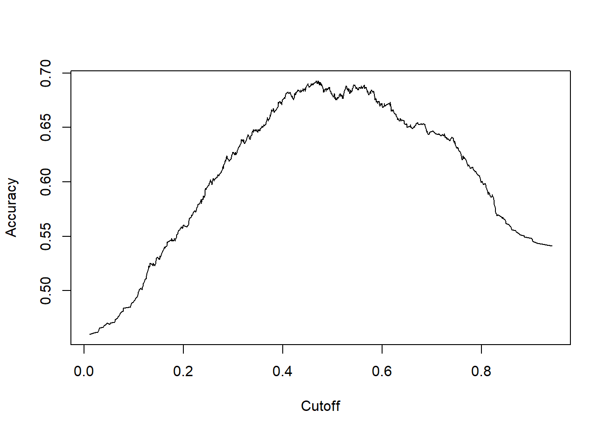 Here we see that 0.5 seems to be OK.
The receiver operating characteristic (ROC) allows also to display true positive rate against false positive rate.
plot(performance(pred, "tpr", "fpr"))
abline(0, 1, lty = 2)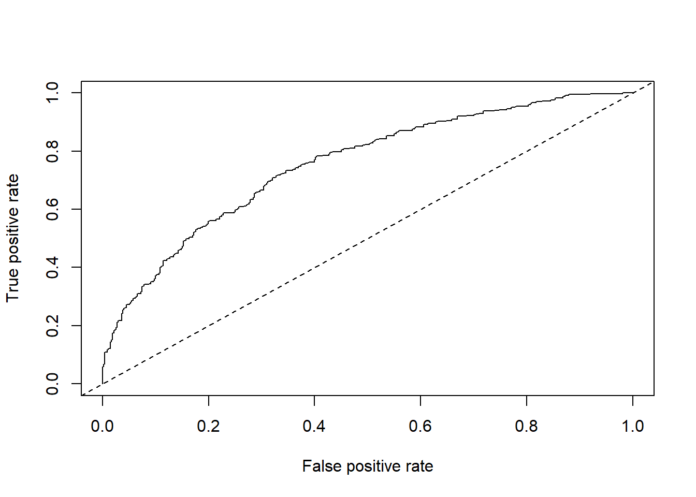
Regression Models for Count data : Poisson Models
We use the RecreationDemand data that regress the number of recreational boating trips to Lake Somerville, TX, in 1980 on divers explicatives variables.
data("RecreationDemand")
rd_pois <- glm(trips ~ ., data = RecreationDemand,
family = poisson)
summary(rd_pois)##
## Call:
## glm(formula = trips ~ ., family = poisson, data = RecreationDemand)
##
## Deviance Residuals:
## Min 1Q Median 3Q Max
## -11.8465 -1.1411 -0.8896 -0.4780 18.6071
##
## Coefficients:
## Estimate Std. Error z value Pr(>|z|)
## (Intercept) 0.264993 0.093722 2.827 0.00469 **
## quality 0.471726 0.017091 27.602 < 2e-16 ***
## skiyes 0.418214 0.057190 7.313 2.62e-13 ***
## income -0.111323 0.019588 -5.683 1.32e-08 ***
## userfeeyes 0.898165 0.078985 11.371 < 2e-16 ***
## costC -0.003430 0.003118 -1.100 0.27131
## costS -0.042536 0.001670 -25.467 < 2e-16 ***
## costH 0.036134 0.002710 13.335 < 2e-16 ***
## ---
## Signif. codes: 0 '***' 0.001 '**' 0.01 '*' 0.05 '.' 0.1 ' ' 1
##
## (Dispersion parameter for poisson family taken to be 1)
##
## Null deviance: 4849.7 on 658 degrees of freedom
## Residual deviance: 2305.8 on 651 degrees of freedom
## AIC: 3074.9
##
## Number of Fisher Scoring iterations: 7Dealing with overdispersion
The Poisson model assumes equal mean and variance. If the variance is larger than the mean, we talk about overdispersion. Test goes as follow (Cameron and Trivedi 1990) :
dispersiontest(rd_pois)##
## Overdispersion test
##
## data: rd_pois
## z = 2.4116, p-value = 0.007941
## alternative hypothesis: true dispersion is greater than 1
## sample estimates:
## dispersion
## 6.5658If that doesn’t hold, like here,then the Poisson model isn’t correct. Quasi-poisson is one possibility when there is overdispersion.
rd_qpois <- glm(trips ~ ., data = RecreationDemand,family = quasipoisson)More flexible distribution is negative binomial with probability density function
library("MASS")##
## Attaching package: 'MASS'## The following object is masked from 'package:wooldridge':
##
## cementrd_nb <- glm.nb(trips ~ ., data = RecreationDemand)
coeftest(rd_nb)##
## z test of coefficients:
##
## Estimate Std. Error z value Pr(>|z|)
## (Intercept) -1.1219363 0.2143029 -5.2353 1.647e-07 ***
## quality 0.7219990 0.0401165 17.9976 < 2.2e-16 ***
## skiyes 0.6121388 0.1503029 4.0727 4.647e-05 ***
## income -0.0260588 0.0424527 -0.6138 0.53933
## userfeeyes 0.6691676 0.3530211 1.8955 0.05802 .
## costC 0.0480087 0.0091848 5.2270 1.723e-07 ***
## costS -0.0926910 0.0066534 -13.9314 < 2.2e-16 ***
## costH 0.0388357 0.0077505 5.0107 5.423e-07 ***
## ---
## Signif. codes: 0 '***' 0.001 '**' 0.01 '*' 0.05 '.' 0.1 ' ' 1Zero-Inflated Poisson and negative binomial models
Typical problem with count data is that it have too many zeros : RecreationDemand example has 63.28% zeros and the Poisson regression provides only 41.96%.We can plot marginal distribution of response:
plot(table(RecreationDemand$trips),ylab="")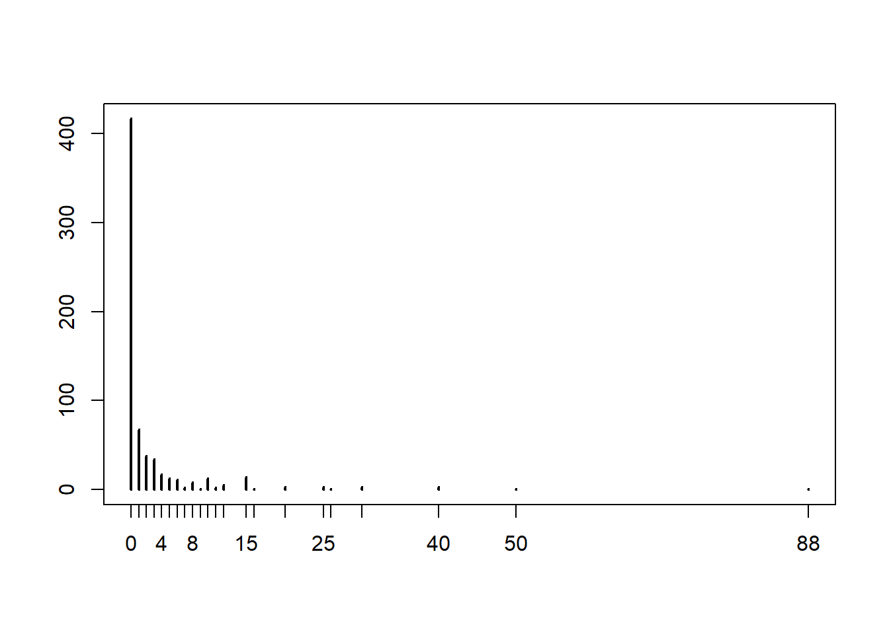
Zero-inflated Poisson (ZIP) model (Mullahy 1986, Lambert 1992) for recreational trips give the following :
library("pscl")## Classes and Methods for R developed in the
## Political Science Computational Laboratory
## Department of Political Science
## Stanford University
## Simon Jackman
## hurdle and zeroinfl functions by Achim Zeileisrd_zinb <- zeroinfl(trips ~ . | quality + income, data = RecreationDemand, dist = "negbin")
summary(rd_zinb)##
## Call:
## zeroinfl(formula = trips ~ . | quality + income, data = RecreationDemand,
## dist = "negbin")
##
## Pearson residuals:
## Min 1Q Median 3Q Max
## -1.08868 -0.20032 -0.05687 -0.04525 39.95749
##
## Count model coefficients (negbin with log link):
## Estimate Std. Error z value Pr(>|z|)
## (Intercept) 1.096094 0.257075 4.264 2.01e-05 ***
## quality 0.169019 0.053135 3.181 0.001468 **
## skiyes 0.500479 0.134496 3.721 0.000198 ***
## income -0.069203 0.043802 -1.580 0.114130
## userfeeyes 0.542557 0.282819 1.918 0.055062 .
## costC 0.040427 0.014522 2.784 0.005372 **
## costS -0.066202 0.007746 -8.547 < 2e-16 ***
## costH 0.020609 0.010235 2.014 0.044061 *
## Log(theta) 0.189859 0.113134 1.678 0.093312 .
##
## Zero-inflation model coefficients (binomial with logit link):
## Estimate Std. Error z value Pr(>|z|)
## (Intercept) 5.7184 1.5596 3.667 0.000246 ***
## quality -8.3596 3.9380 -2.123 0.033768 *
## income -0.2516 0.2847 -0.884 0.376832
## ---
## Signif. codes: 0 '***' 0.001 '**' 0.01 '*' 0.05 '.' 0.1 ' ' 1
##
## Theta = 1.2091
## Number of iterations in BFGS optimization: 26
## Log-likelihood: -722 on 12 DfCensored Dependent Variables : Tobit Models
Censored regression models are a class of models in which the dependent variable is censored above or below a certain threshold. A commonly used likelihood-based model to accommodate to a censored sample is the Tobit model, but quantile and nonparametric estimators have also been developed. These and other censored regression models are often confused with truncated regression models. Truncated regression models are used for data where whole observations are missing so that the values for the dependent and the independent variables are unknown. Censored regression models are used for data where only the value for the dependent variable is unknown while the values of the independent variables are still available.
We use the survival package (Therneau and Grambsch 2000) to fit censored regression model and the “Fair’s affairs” (Fair, JPE 1978) dataset, a survey on extramarital affairs conducted by Psychology Today (1969) and dependent variable is affairs (number of extramarital affairs during past year), regressors are notably gender, age…
data("Affairs")
aff_tob <- tobit(affairs ~ age + yearsmarried +
religiousness + occupation + rating, data = Affairs)
summary(aff_tob)##
## Call:
## tobit(formula = affairs ~ age + yearsmarried + religiousness +
## occupation + rating, data = Affairs)
##
## Observations:
## Total Left-censored Uncensored Right-censored
## 601 451 150 0
##
## Coefficients:
## Estimate Std. Error z value Pr(>|z|)
## (Intercept) 8.17420 2.74145 2.982 0.00287 **
## age -0.17933 0.07909 -2.267 0.02337 *
## yearsmarried 0.55414 0.13452 4.119 3.80e-05 ***
## religiousness -1.68622 0.40375 -4.176 2.96e-05 ***
## occupation 0.32605 0.25442 1.282 0.20001
## rating -2.28497 0.40783 -5.603 2.11e-08 ***
## Log(scale) 2.10986 0.06710 31.444 < 2e-16 ***
## ---
## Signif. codes: 0 '***' 0.001 '**' 0.01 '*' 0.05 '.' 0.1 ' ' 1
##
## Scale: 8.247
##
## Gaussian distribution
## Number of Newton-Raphson Iterations: 4
## Log-likelihood: -705.6 on 7 Df
## Wald-statistic: 67.71 on 5 Df, p-value: 3.0718e-13Time Series
Infrastructure and “Naive” Methods
Standard time series class in R is “ts” and aimed at regulat series such as annual, quaterly, monthly.
We take the example of the quaterly consumption of non-durables in the United Kingdom (Franses 1998)
data("UKNonDurables")
plot(UKNonDurables)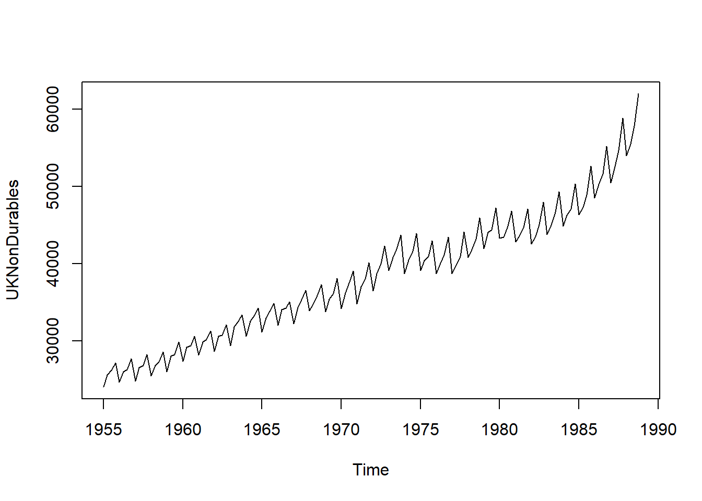
We can set time series properties and subsets observations.
tsp(UKNonDurables)## [1] 1955.00 1988.75 4.00window(UKNonDurables,end=c(1956,4))## Qtr1 Qtr2 Qtr3 Qtr4
## 1955 24030 25620 26209 27167
## 1956 24620 25972 26285 27659If you deal with irregular series, you might need to use other package such as the zoo Generalization of “ts”: time stamps of arbitrary type. Numeric vectors or matrices, “index” attribute contains vector of time stamps (not just “tsp” attribute!). Regular series can be coerced back and forth between “ts” and “zoo” via as.zoo() and as.ts(). “zoo” more convenient for daily data (e.g., “Date” time stamps) or intraday data (e.g., “POSIXct” or “chron” time stamps). More details: Zeileis and Grothendieck (JSS 2005).
Linear filtering
Finite moving averages is the most important one. You can implemente it with the filter() function in R. Applied to the UKDriverDeaths database (Harvey and Durbin, JRSS A 1986), we obtain the following.
data("UKDriverDeaths")
plot(UKDriverDeaths)
lines(filter(UKDriverDeaths, c(1/2, rep(1, 11), 1/2)/12),
col = 2)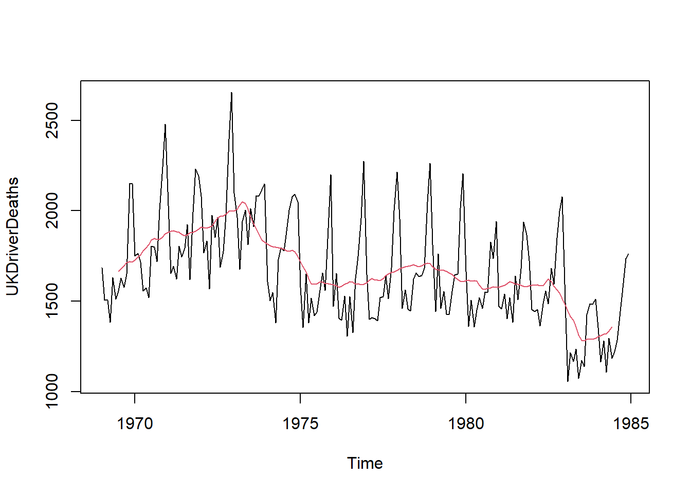
Decomposition into seasonal, trend and irregular components
In R, decompose() takes simple symmetric filter for extracting trend,derives seasonal component by averaging trend-adjusted observations from corresponding periods. stl() iteratively finds seasonal and trend components by loess smoothing in moving data windows.
dd_dec <- decompose(log(UKDriverDeaths))
dd_stl <- stl(log(UKDriverDeaths), s.window = 13)Classical Model-Based Analysis
We follow the Box-Jenkins approach for preliminary analysis. HERE I NEED TO PUT SOMETHING MORE
Stationarity, unit roots, and cointegration test
Many time series in macroeconomics and finance are nonstationary.With use the example from Franses 1998 which is a bivariate time series of average monthly European spot prices for black and white pepper (in US dollars per ton).
data("PepperPrice")
plot(PepperPrice, plot.type = "single", col = 1:2)
legend("topleft", c("black", "white"), bty = "n",
col = 1:2, lty = rep(1,2))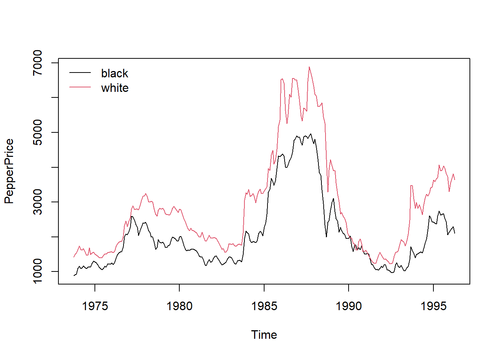
Unit-root test
The augmented Dickey-Fuller (ADF) test can be done as follow :
library(tseries)## Registered S3 method overwritten by 'quantmod':
## method from
## as.zoo.data.frame zooadf.test(log(PepperPrice[,"white"]))##
## Augmented Dickey-Fuller Test
##
## data: log(PepperPrice[, "white"])
## Dickey-Fuller = -1.744, Lag order = 6, p-value = 0.6838
## alternative hypothesis: stationarystationarity test
Kwiatkowski, Phillips, Schmidt and Shin (J. Econometrics 1992) create a test with two variants, one with a level stationnarity and the other one with a tredn stationnarity.
library(tseries)
kpss.test(log(PepperPrice[,"white"]))##
## KPSS Test for Level Stationarity
##
## data: log(PepperPrice[, "white"])
## KPSS Level = 0.61733, Truncation lag parameter = 5, p-value = 0.02106cointegration test
Engle-Granger two-step method Available in po.test() from tseries (named after Phillips and Ouliaris, Econometrica 1990).
po.test(log(PepperPrice))##
## Phillips-Ouliaris Cointegration Test
##
## data: log(PepperPrice)
## Phillips-Ouliaris demeaned = -24.099, Truncation lag parameter = 2,
## p-value = 0.02404if the p-value is lower thant 5%, it suggests that both series are cointegrated.
Time series regression and structural change
Fitting dynamic regression models
library(dynlm)
dd <- log(UKDriverDeaths)
dynlm(dd ~ L(dd) + L(dd, 12))##
## Time series regression with "ts" data:
## Start = 1970(1), End = 1984(12)
##
## Call:
## dynlm(formula = dd ~ L(dd) + L(dd, 12))
##
## Coefficients:
## (Intercept) L(dd) L(dd, 12)
## 0.4205 0.4310 0.5112Support Vector Regression (SVR)
We use the reading skills database from the party package
library(party)## Loading required package: grid## Loading required package: mvtnorm## Loading required package: modeltools## Loading required package: stats4##
## Attaching package: 'modeltools'## The following object is masked from 'package:car':
##
## Predict## Loading required package: strucchangeprint(head(readingSkills))## nativeSpeaker age shoeSize score
## 1 yes 5 24.83189 32.29385
## 2 yes 6 25.95238 36.63105
## 3 no 11 30.42170 49.60593
## 4 yes 7 28.66450 40.28456
## 5 yes 11 31.88207 55.46085
## 6 yes 10 30.07843 52.83124Fitting SVR to the dataset
library(e1071)
regressor = svm(formula = score ~ shoeSize,
data = readingSkills,
type = 'eps-regression',
kernel = 'radial')Predicting a new result
y_pred = predict(regressor, data.frame(shoeSize = 26))Visualising the SVR results
library(ggplot2)
x_grid = seq(min(readingSkills$shoeSize), max(readingSkills$shoeSize), 0.1)
ggplot() +
geom_point(aes(x = readingSkills$shoeSize, y = readingSkills$score),
colour = 'red') +
geom_line(aes(x = x_grid, y = predict(regressor, newdata = data.frame(shoeSize = x_grid))),
colour = 'blue') +
ggtitle('Truth or Bluff (SVR)') +
xlab('shoeSize') +
ylab('score')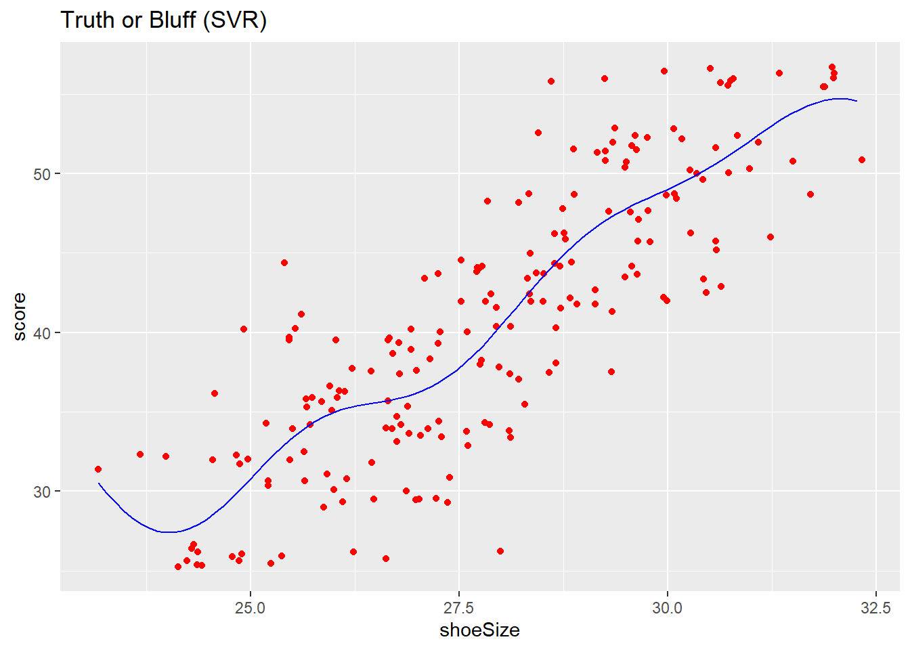
Decision Tree regression
Ames Housing data
To illustrate various regularization concepts we will use the Ames Housing data that has been included in the AmesHousing package.
library(AmesHousing)
library(rsample)
ames_split <- initial_split(AmesHousing::make_ames(), prop = .7)
ames_train <- training(ames_split)
ames_test <- testing(ames_split)
print(head(ames_train))## # A tibble: 6 x 81
## MS_SubClass MS_Zoning Lot_Frontage Lot_Area Street Alley Lot_Shape
## <fct> <fct> <dbl> <int> <fct> <fct> <fct>
## 1 One_Story_~ Resident~ 80 11622 Pave No_A~ Regular
## 2 One_Story_~ Resident~ 81 14267 Pave No_A~ Slightly~
## 3 One_Story_~ Resident~ 93 11160 Pave No_A~ Regular
## 4 Two_Story_~ Resident~ 74 13830 Pave No_A~ Slightly~
## 5 Two_Story_~ Resident~ 78 9978 Pave No_A~ Slightly~
## 6 One_Story_~ Resident~ 41 4920 Pave No_A~ Regular
## # ... with 74 more variables: Land_Contour <fct>, Utilities <fct>,
## # Lot_Config <fct>, Land_Slope <fct>, Neighborhood <fct>, Condition_1 <fct>,
## # Condition_2 <fct>, Bldg_Type <fct>, House_Style <fct>, Overall_Qual <fct>,
## # Overall_Cond <fct>, Year_Built <int>, Year_Remod_Add <int>,
## # Roof_Style <fct>, Roof_Matl <fct>, Exterior_1st <fct>, Exterior_2nd <fct>,
## # Mas_Vnr_Type <fct>, Mas_Vnr_Area <dbl>, Exter_Qual <fct>, Exter_Cond <fct>,
## # Foundation <fct>, Bsmt_Qual <fct>, Bsmt_Cond <fct>, Bsmt_Exposure <fct>,
## # BsmtFin_Type_1 <fct>, BsmtFin_SF_1 <dbl>, BsmtFin_Type_2 <fct>,
## # BsmtFin_SF_2 <dbl>, Bsmt_Unf_SF <dbl>, Total_Bsmt_SF <dbl>, Heating <fct>,
## # Heating_QC <fct>, Central_Air <fct>, Electrical <fct>, First_Flr_SF <int>,
## # Second_Flr_SF <int>, Low_Qual_Fin_SF <int>, Gr_Liv_Area <int>,
## # Bsmt_Full_Bath <dbl>, Bsmt_Half_Bath <dbl>, Full_Bath <int>,
## # Half_Bath <int>, Bedroom_AbvGr <int>, Kitchen_AbvGr <int>,
## # Kitchen_Qual <fct>, TotRms_AbvGrd <int>, Functional <fct>,
## # Fireplaces <int>, Fireplace_Qu <fct>, Garage_Type <fct>,
## # Garage_Finish <fct>, Garage_Cars <dbl>, Garage_Area <dbl>,
## # Garage_Qual <fct>, Garage_Cond <fct>, Paved_Drive <fct>,
## # Wood_Deck_SF <int>, Open_Porch_SF <int>, Enclosed_Porch <int>,
## # Three_season_porch <int>, Screen_Porch <int>, Pool_Area <int>,
## # Pool_QC <fct>, Fence <fct>, Misc_Feature <fct>, Misc_Val <int>,
## # Mo_Sold <int>, Year_Sold <int>, Sale_Type <fct>, Sale_Condition <fct>,
## # Sale_Price <int>, Longitude <dbl>, Latitude <dbl>Fitting Decision Tree Regression to the dataset
library(rpart)
regressor = rpart(formula = Sale_Price ~ .,
data = ames_train,
method = "anova",
control = rpart.control(minsplit = 1,minbucket = 1))Plot of the Graph
We can visualize our model with rpart.plot. rpart.plot has many plotting options, which we’ll leave to the reader to explore. However, in the default print it will show the percentage of data that fall to that node and the average sales price for that branch.
library(rattle)## Loading required package: tibble## Loading required package: bitops## Rattle: A free graphical interface for data science with R.
## Version 5.4.0 Copyright (c) 2006-2020 Togaware Pty Ltd.
## Type 'rattle()' to shake, rattle, and roll your data.##
## Attaching package: 'rattle'## The following objects are masked from 'package:wooldridge':
##
## audit, winelibrary(rpart.plot)
library(RColorBrewer)
rpart.plot(regressor)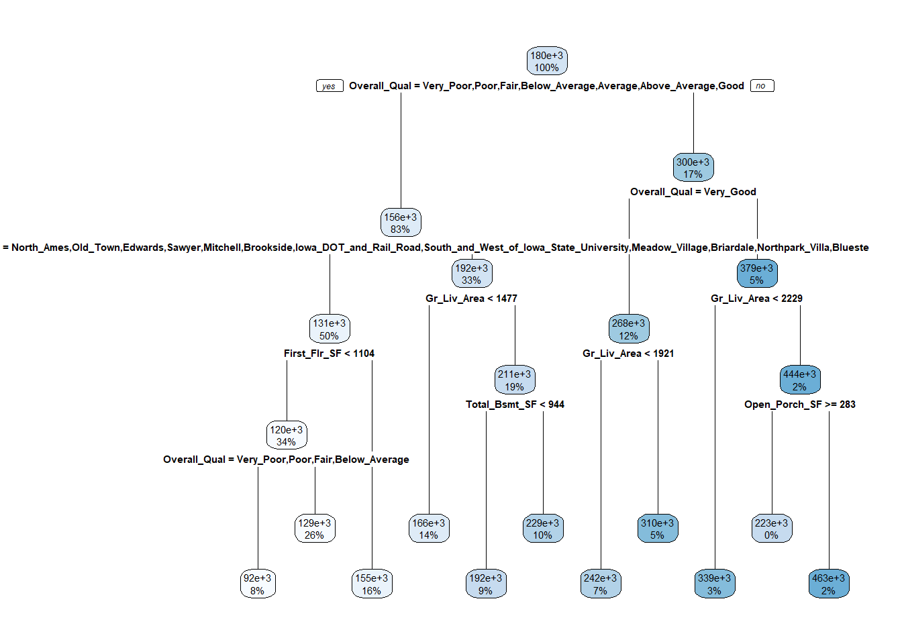
Random Forest Regression
Ames Housing data
To illustrate various regularization concepts we will use the Ames Housing data that has been included in the AmesHousing package.
library(AmesHousing)
library(rsample)
ames_split <- initial_split(AmesHousing::make_ames(), prop = .7)
ames_train <- training(ames_split)
ames_test <- testing(ames_split)##Train the model
library(randomForest)
regressor = randomForest(Sale_Price ~.,
data = ames_train,
ntree = 5)
print(regressor)##
## Call:
## randomForest(formula = Sale_Price ~ ., data = ames_train, ntree = 5)
## Type of random forest: regression
## Number of trees: 5
## No. of variables tried at each split: 26
##
## Mean of squared residuals: 1405904742
## % Var explained: 78.11Test of the model
pred_1 = predict(regressor,ames_test)Variable Importance
varImpPlot(regressor)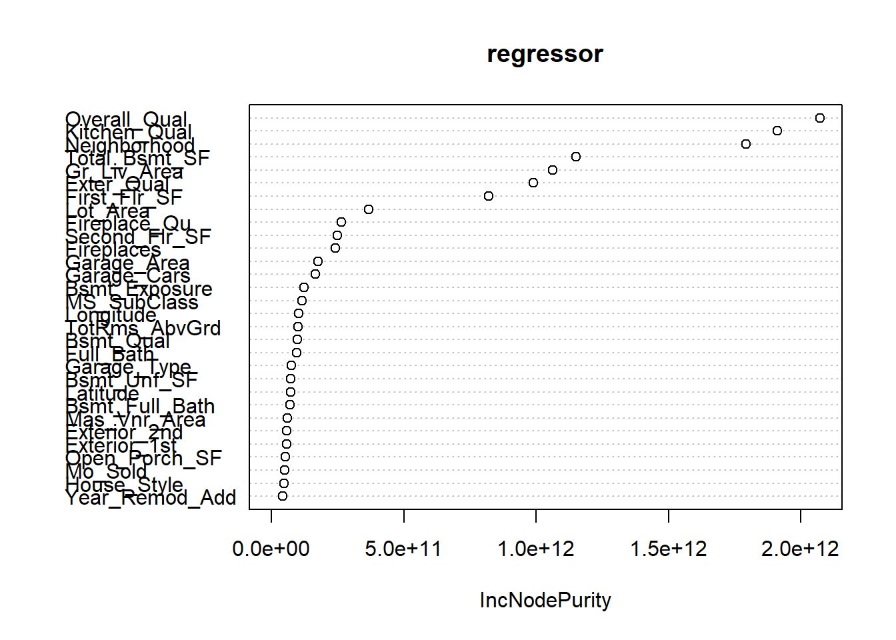